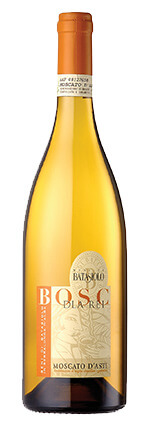
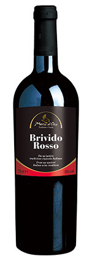
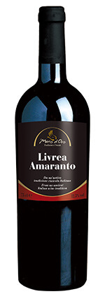
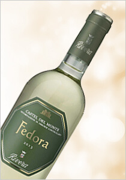
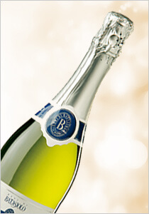
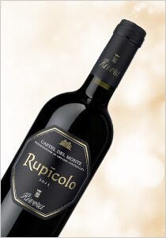

義大利巴塔希亞斯堤微甜白酒
Italy Piemonte Batasiolo Moscato D'Asti sweet white
價格：$398
產品編號：07-10-02
產品總數：60 瓶
每人限購：3 瓶
地區：皮蒙
適合搭配：

葡萄品種：蜜思嘉
特色說明：
黃金稻草色，聞起來有豐富濃郁的非常成熟水果香氣。喝起來有持久的清新口感，例如荔枝、水蜜桃、梨子的果香級風闢的香甜。細微的甜味與爽口的微酸味達到完美的平衡。冰涼6-8℃後飲用最佳，除了當作開胃酒或搭配任何餐點，更適合單獨飲用。

義大利 Mano D'Oro 冷意紅酒
Italy Campania Mano D'Oro Brivido red
價格：$430
產品編號：10-05
產品總數：120 瓶
每人限購：6 瓶


T大評分：

香氣一般，口感甜美均衡，佐餐優。燉肉、義大利麵、披薩。

聶汎勳 / Nien 評分：

難得細緻優雅的campania，礦石、辛香料，果香細緻，酸度均衡，單寧優美，尾韻長。

曾孟翊 / Xavier 評分：

討喜的紫羅蘭花香，香氣十足，單寧良好。
地區：坎帕尼亞
適合搭配：

葡萄品種：Aglianico, Montepulciano
特色說明：
李子、黑色水果和香料的香氣，充滿果味和巴薩米克的香味，尾韻帶有淡淡的烘烤香。

義大利 Mano D'Oro 阿瑪紅酒
Italy Campania Mano D'Oro Livrea Amaranto red
價格：$359
產品編號：10-01
產品總數：150 瓶
每人限購：8 瓶
聶汎勳 / Nien 評分：
水果、辛香料和淡淡的肉乾香，高酸度，單寧結構多層次，可陳年 10 年。
地區：坎帕尼亞
適合搭配：

葡萄品種：Piedirosso, Montepulciano
特色說明：
成熟果香，充滿果味和巴薩米克的香味，尾韻帶有淡淡的烘烤香。

義大利里維拉蒙特堡費多拉白酒
Italy Puglia Rivera Fedora white

義大利巴塔希慕斯卡多氣泡酒
Italy Piemonte Batasiolo Moscato Spumante sparkling

義大利里維拉蒙特堡魯皮可洛紅酒
Italy Puglia Rivera Rupicolo red
如欲訂購請洽 0809-036-888 客服專線，並告知產品編號與數量，訂購完成後 2 天 ，請至家樂福天母店出示身分證領取並完成付款。